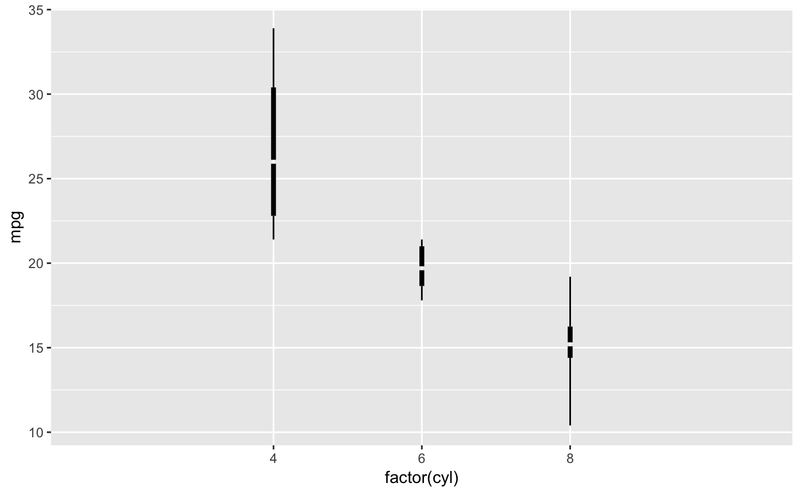
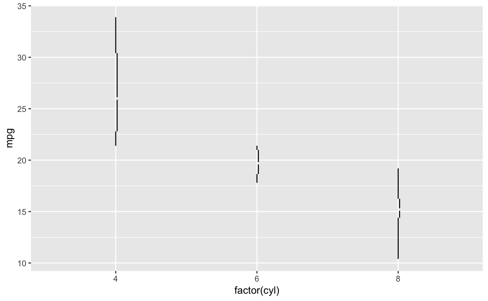
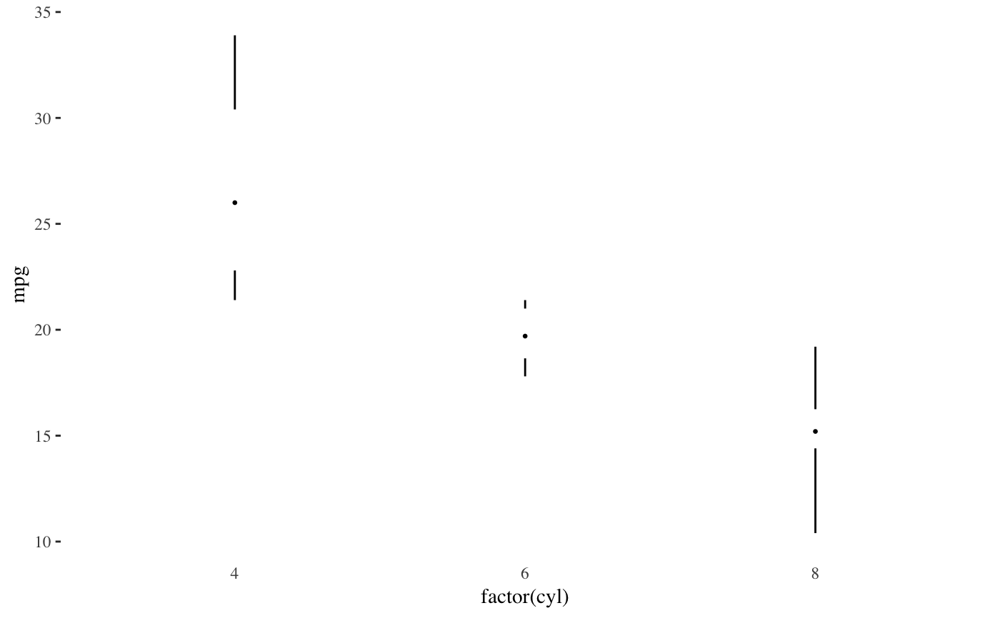

Edward Tufte's revisions of the box plot as described in The Visual Display of Quantitative Information. This functions provides several box plot variants:
A point indicating the median, a gap indicating the interquartile range, and lines for whiskers.
An offset line indicating the interquartile range and a gap indicating the median.
A line indicating the interquartile range, a gap indicating the median, and points indicating the minimum and maximum values
A wide line indicating the interquartile range, a gap indicating the median, and lines indicating the minimum and maximum.
geom_tufteboxplot( mapping = NULL, data = NULL, stat = "fivenumber", position = "dodge", outlier.colour = "black", outlier.shape = 19, outlier.size = 1.5, outlier.stroke = 0.5, voffset = 0.01, hoffset = 0.005, na.rm = FALSE, show.legend = NA, inherit.aes = TRUE, median.type = "point", whisker.type = "line", ... )
Arguments
| mapping | Set of aesthetic mappings created by |
|---|---|
| data | The data to be displayed in this layer. There are three options: If A A |
| stat | The statistical transformation to use on the data for this layer, as a string. |
| position | Position adjustment, either as a string, or the result of a call to a position adjustment function. |
| outlier.colour | colour for outlying points |
| outlier.shape | shape of outlying points |
| outlier.size | size of outlying points |
| outlier.stroke | stroke for outlying points |
| voffset | controls the size of the gap in the line representing the
median when |
| hoffset | controls how much the interquartile line is offset from the
whiskers when |
| na.rm | If |
| show.legend | logical. Should this layer be included in the legends?
|
| inherit.aes | If |
| median.type | If |
| whisker.type | If |
| ... | Other arguments passed on to |
Aesthetics
x [required]
y [required]
colour
size
linetype
shape
fill
alpha
References
Tufte, Edward R. (2001) The Visual Display of Quantitative Information, Chapter 6.
McGill, R., Tukey, J. W. and Larsen, W. A. (1978) Variations of box plots. The American Statistician 32, 12-16.
See also
Other geom tufte:
geom_rangeframe()
Examples
library("ggplot2") p <- ggplot(mtcars, aes(factor(cyl), mpg)) # with a point for the median and lines for whiskers p + geom_tufteboxplot()# with a line for the interquartile range and points for whiskers p + geom_tufteboxplot(median.type = "line", whisker.type = "point", hoffset = 0)# with a wide line for the interquartile range and lines for whiskers p + geom_tufteboxplot(median.type = "line", hoffset = 0, width = 3)#> Warning: position_dodge requires non-overlapping x intervals# with an offset line for the interquartile range and lines for whiskers p + geom_tufteboxplot(median.type = "line")# combined with theme_tufte p + geom_tufteboxplot() + theme_tufte() + theme(axis.ticks.x = element_blank())